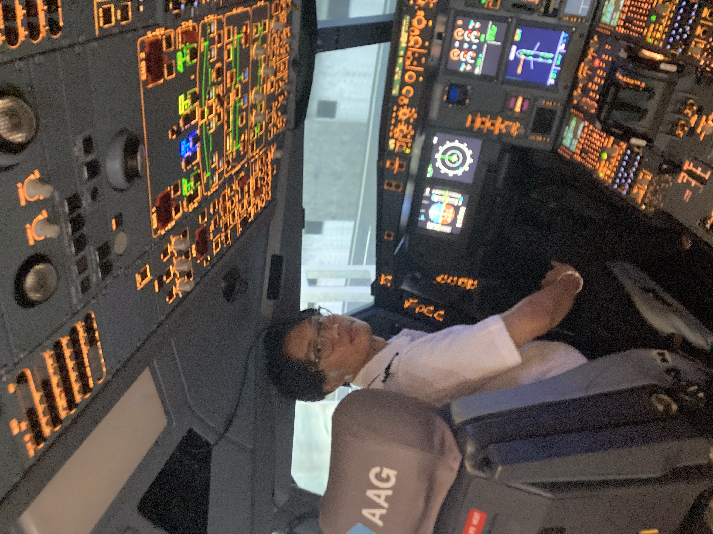
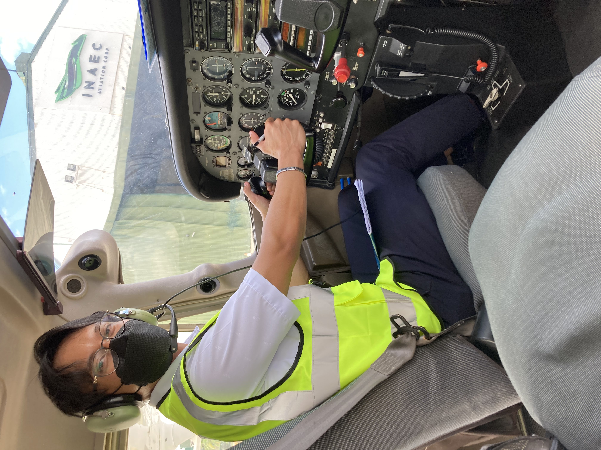

Internships
Fifteen-plus pre- and post-flight inspections across A320, ATR-72 and B737 during line maintenance, then an A320 engine overhaul in base maintenance, including a torque-controlled fastener installation on a wing leading-edge de-icing boot under a licensed mechanic's sign-off. The last rotation was technical records: reviewing NRC, service-bulletin and airworthiness-directive compliance.
Also where I learned to safety-wire properly. It is a small, unglamorous detail, but it tells you whether a job was done by someone paying attention.
Two weeks with AAG's Ground Support Group: flight simulation sessions on a Cessna 172 and an A320, trainer aircraft external inspection and cockpit prep, and one supervised engine run-up and taxi on the Cessna, working through the function checks and fault indications that go with it.
A fault indication reads differently once you have sat in the seat that shows it to you.


The best I could do that week. Not yet the best I'll do.
I studied aeronautical engineering at Holy Angel University from 2020 to 2024, graduating on the Dean's List with a GPA of 3.6 out of 4.0. My coursework spanned aircraft structures, aircraft/helicopter/UAV design and systems, aerodynamics, powerplant, and reliability engineering, and I was licensed as a PRC Professional Aeronautical Engineer that same year. Somewhere between a hangar internship and a mesh study I worked out what I actually enjoy: taking an analysis far enough that it turns into a toleranced drawing someone can quote, machine and inspect.
The hangar came first, though. It is hard to over-report a factor of safety once you have seen what an aircraft actually looks like at 40,000 cycles.
I am based in Tsukuba, Japan. I'm happy to walk through any of these end to end, including the two that failed.